In all the following descriptions, the convolving function is designated by 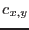, where  and
and  are integer pixel numbers. Convolvers must necessarily be of finite extent, hence are only defined over a rectangular array.
are integer pixel numbers. Convolvers must necessarily be of finite extent, hence are only defined over a rectangular array.
It is necessary to have some way to determine the `phase' of any convolver: ie, which pixel of the convolver array should be taken to have row and column indices  and
and  equal to zero. The rule applied by asmooth
is as follows. If the convolver has for example
equal to zero. The rule applied by asmooth
is as follows. If the convolver has for example  rows, then row 1 plus the integer
rows, then row 1 plus the integer part of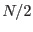 is taken as the zeroth row. This means that if
part of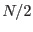 is taken as the zeroth row. This means that if  is odd, the central row is the zeroth row, ie the row indices are taken to extend from 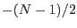 to 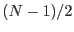; if
is odd, the central row is the zeroth row, ie the row indices are taken to extend from 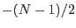 to 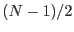; if  is even, the row indices run from 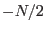 to 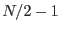. The same rule is applied to the columns.
is even, the row indices run from 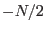 to 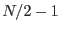. The same rule is applied to the columns.